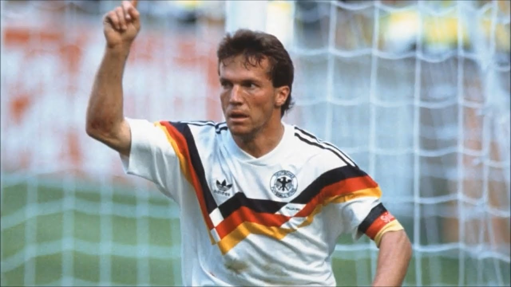
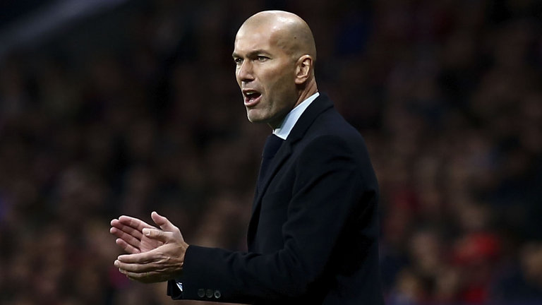

The image above is about the person who has the most goals ever across world cups. This Person is Miroslav Klose.
He broke this record in the last World Cup in 2014. Where it is was Ronaldo who was standing tall on the top of the goalscoring table.
His record stands at 16 goals across 12 years. The years he competed in was 2002, 2006, 2010 and 2014, where he won his first and sadly last, as he annouced his retirement at the end of the world cup.

Lothar Matthaeus is special in terms of statisics for the World Cup as he actually holds two records. The first one is that he has played the most matches than any other player at the World Cup. He has played in 25 matches and is still looking like not to be losing that record for some time.
The next record is really obviously, as he has played the most matches, the next record he has is that he has particapated in the most tournaments. That record stands at 5, where he was in the 1982, 1986, 1990, 1994, 1998.

For how good Zidane was, you would probably assume he would have a great record, like the most assists in the World Cup... No.
In fact Zidane holds the record for being the most carded player at the World Cup, which isn't a statisic to be proud of.
He has 6 cards across 3 tournaments with 4 yellows and 2 reds. Famously one of the reds came in the 2006 World cup final where he headbutted Materazzi, which then resulted in Italy going on to win that World Cup.

Last but not least, its Pele. You can not have a website about the World Cup then actually having Mr.World Cup himself.
Regarded as one of the best players to ever grace a football pitch, holds the record of winning the most World Cups of a total of 5.
This record is just mind blowing, first to even win that many World Cups but not just that but to be the only player to even have that many, he is in a league of his own.